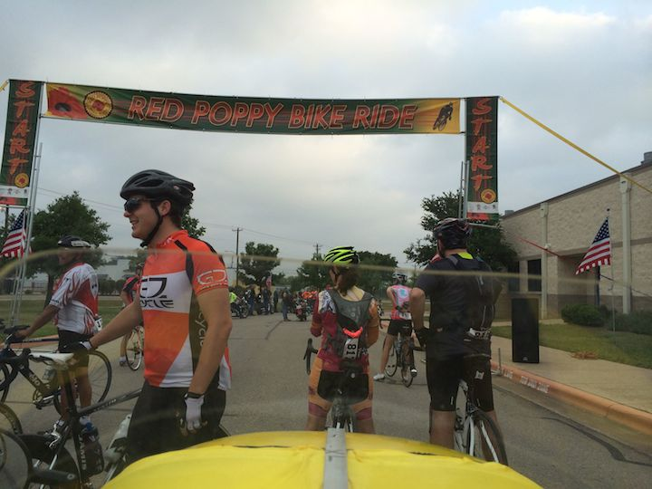
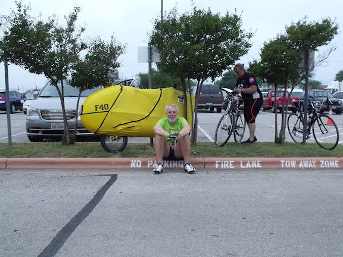
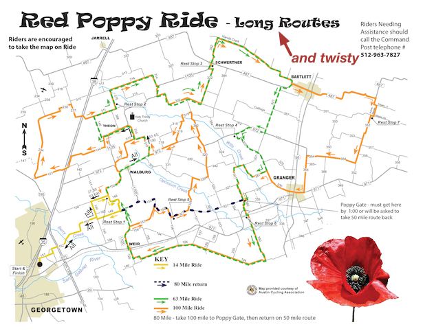
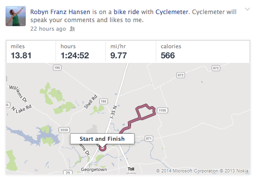
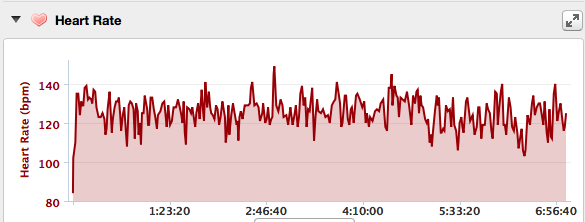
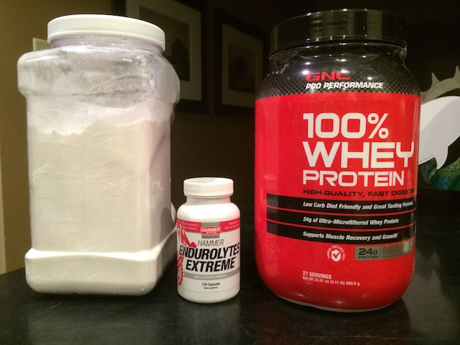
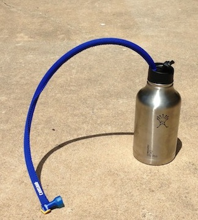
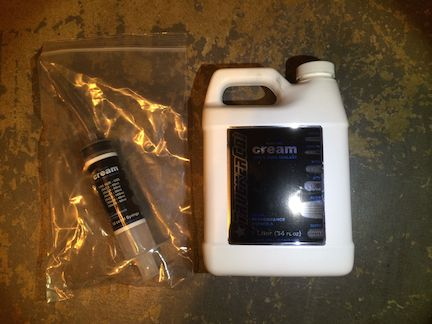
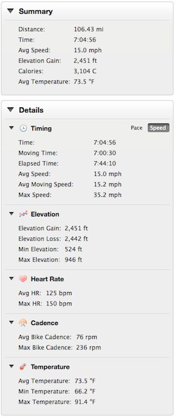
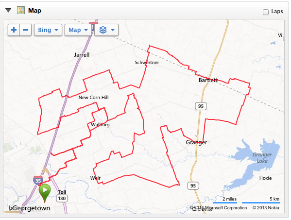

F-40 Red Poppy Ride Report
26 Apr 2014
Georgetown Poppy Ride was a success! 111.1 miles for the day. 3.7 miles riding from my home to the start of the Poppy Ride - 103.4 miles for the Poppy Ride and 4 extra bonus miles when I got lost again.
The day started out overcast and pretty much stayed that way all day.

A little over 1,000 riders. Recumbents were represented pretty good with at least 5 trikes and my F-40. I did not see any other two wheeler recumbent which was not too surprising because the course had A LOT of turns for all the routes. I do this ride because it starts less than 4 miles from my house.
There was not room in the minivan to load up the two trikes for Robyn and Liz and then put my F-40 in there also. So, I left the house a little early and rode the 3.7 miles to the start on my F-40. It was still dark when I left the house but I had a headlight on the front and flashing taillight on the back so it was no problem. Fifteen minutes later when I got to the ride dawn had broken and I parked the F-40 at registration / packet-pickup and sat there gabbing with other riders as then came by. This picture of me sitting there was take by Brian Buckmaster who rode the 63 mile route on his ICE Vortex. Turns out he got the same 4 bonus miles I did.

Here is the long routes map (I added the twisty part).

The 100 mile route must have had over 50 turns. I live in Georgetown and have ridden this ride four times now. I’ve gotten lost 3 of the four times. This time I stopped four times in the middle of nowhere to check the paper map to make sure I was still on course. Even then 6 miles from the end of the ride I zoom by the turn off and end up going 4 extra bonus miles.
Family
Three and 1/2 years ago when I started riding a recumbent trike I did not get the most encouraging comments from other family members who rode upright bikes. Today several of my family members joined me on the Red Poppy ride and it was really nice to have everyone there. Here is my daughter Alyssa on the hybrid and my sister-in-law Liz on the the Catrike Expedition - my wife Robyn is taking the picture on her Catrike Expedition. The whole family had a great time on the rides.

They did the short ride this time and really enjoyed it. Robyn and Liz finished the ride and then had time to go home, shower, get dressed and attend a funeral for a friend’s mom, have lunch at Dos Salsas and still make it back to the start of the ride in time to see me finish hours later.

Ride Strategy
The ride strategy was pretty simple - go as easy as I could - finish the 100 miles.
Unfortunately that strategy is pretty hard to implement with the F-40. Today was successful and this was my first successful century ride this year.
I still started out a little faster than I wanted too, but quickly reined it in. Kept my heart rate in the lower 120s as much as I could. Only allowed it to rise on really steep hills. Even then I would gear down into the granny gear and spin my way to the top trying to keep close to an 85 rpm cadence.
The last 20 miles or so I was doing the ’coast the down slopes, easy peddle the up slopes’ routine.

Nutrition and Hydration
Not even a hint of cramps all day! No hunger and no dehydration.
After my disastrous cramp-a-thon a couple of weeks ago I decided to get serious about dehydration, endurolytes and consuming enough calories per hour so that I don’t bonk.
I looked online at several recipes for mixing your own sports drink and finally settled on one that has worked out pretty good.
The recipe for a four hour bottle is:
3.0 cups of water 2.0 cups of maltodextrin (1000 calories) 3/4 scoop GNC chocolate flavored whey protein (100 calories) 6 capsules of Hammer Endurolyte Extreme Bring the 3 cups of water to almost a simmer. Pull the 6 endurolyte capsules apart and empty the contents into the water. Put the scoop of chocolate whey protein into the water. Slowly stir in the 2 cups of maltodextrin making sure it fully dissolves. Once fully dissolved pour into a 26 oz water bottle. Do this the night before the ride and put in the refrigerator overnight so it will be cold the day of the ride. Drink 1/4 of the bottle every hour on the hour. This will give you about 275 calories per hour and the necessary endurolytes. You will need to drink at least 8 oz of water when you drink the 1/4 bottle, otherwise the osmolality of the maltodextrin is too high for your stomach.
I practiced with this mixture a few times during my daily training rides to make sure it was something my stomach could handle and that I liked the taste.

As a side note - you can buy a 2 pound bag of maltodextrin for $20 bucks, or you can buy a 50 pound bag for $49 dollars. I will warn you though - a 50 pound bag of maltodextrin is huge and when the delivery truck shows up at your door you wife is going to stare at you really hard. By the way - if anybody local needs some maltodextrin I apparently have some extra.
I also decided to use the 64 oz beer growler on the ride.

Refilled this three times on the ride and still had ice at the end from 6:00 am in the morning when I initially filled it.
Stan’s No Flat (Actually a much cheaper knockoff)
It is getting to be goat-head season so Thursday I put some latex based No Flat stuff into my tires. Many people were pulled over during the ride changing tires. No flats for me today. I did examine my front tire at the end of the day and did notice 3 places where it looked like the tire may have been punctured by a goat-head but the white sealant had done its job.

The Ride
I wanted to start slower so instead of starting at the very front of the line I lined up in the second row right behind the leaders. I picked some young kid with a slick time-trial helmet on and a fast looking bike to start behind.
Just my luck when the announcer says 100 miles and 80 miles GO! The kid just sits there. I could not get around him because people were just streaming quickly by. I guess the kid was doing the 50 miler and was going to sit there in the middle of the starting gate until it was his turn. After what seemed like several minutes (but was probably only about a minute) about a hundred people had streamed by both sides of me the announcer sees that the kid has created a huge jam up starting with me and the lots of people behind me - the announcer yells at the kid GO NOW! and we finally get moving through the start gate.
The best part of that whole sequence was now I’m so far back from the leaders I don’t have the urge anymore to try and keep up with them.
The back roads were rough, I mean really rough. How rough? About 12 miles out I hear and feel something bounce out the back end of my tail fairing. I quickly put the brakes on, pull over that look backwards up the road from which I had just ridden. I don’t see anything on the road.
I start examining the bike to see what is missing. iPhone still there, growler still there, tools still there, check the brakes, brake cables, spin the wheels. Well darn, I can’t find anything missing and the bike seems to be functioning all ok.
Well, I guess I’ll just continue on, maybe I just kicked something up from the road and it jiggled around in the tail fairing for second. You know, while I’m stopped here it has been about 45 minutes ride time already, maybe I should have a sip of my new fangled sports drink before taking off again - what? - where’s the damn bottle? Ahhhh, that is what fell out. Back track about 30 yards and there’s my water bottle off to the side of the road hidden in some high grass.
It would have been a real bummer to get to the first hour mark and then not have any sports drink at all - especially after spending so much effort and experimentation trying to get it right.
It was windy all day. 12 mph gusting to 23 mph. The few time I got above 30 mph it scared the daylights out of me and I rode the brakes a lot of the time to keep the speed down. Even then when the route pointed directly into the wind I started passing people like mad while still keeping my heart rate in the low 120s.
About 30 miles into the ride I take yet another turn, into the wind, and an upright bike pulls right up to my tail. The rider says "don’t worry, I’m a professional and I’m going to draft off you into this headwind", whatever, but he then proceeds to do really nice draft for a good while, he is keeping up and I’m not slowing down for him. About this time the routes diverge - 100 milers one way, all others go straight. Of course I’m going so fast by the time I think I saw the turnoff arrow I’m all ready by the intersection. So I ask my drafter was that the 100 miler turn off. He say yes but he is only doing the 50 mile ride, I tell him I’m going to need to turn around and go back to take my turn for the 100 mile route. He slows down slightly and says "hey, the road is clear behind us go head and turn around". Not wanting to get t-boned by him I tell him to go ahead of me and I’ll turn around once he is past. On his way by he says "thanks for letting me go by first, I’m on a fixie with no brakes and starting to get to get little tired keeping up drafting you"!
There was very light misting a couple of times during the day but nothing that stuck long enough to make the road wet.
It was almost 7 hours and 45 minutes elapsed time with 7 hours and 4 minutes ride time. I stopped several times to check the map to make sure I was on course.
When I finished I was still in great shape. Lots of leg strength left, no cramping at all.
By the numbers

 http://connect.garmin.com/modern/activity/487817187
Next Saturday May 3
GASP - Greater Austin to Shiner Peddle